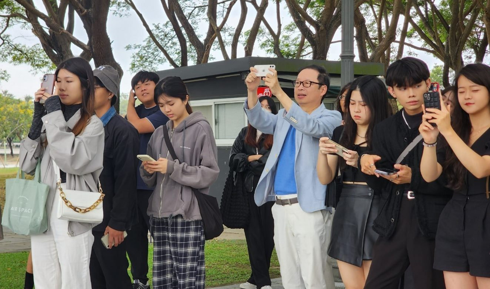

全球視野
從在地洞察出發，理解跨國市場與品牌經營。
FENG CHIA UNIVERSITY · TAIWAN
逢甲大學全球行銷碩士班
以品牌為起點，串起科技、美學與真實商業現場，
培養面向世界的行銷實力。
實務 × 實作 × 實戰 · 從想法到行動

IDEAS INTO IMPACT
全球行銷的能力，來自對市場的理解、對品牌的感受，以及解決問題的行動力。我們讓企業、教師與學生一起思考，從真實的商業課題中，練習提出自己的解方。
認識我們的學習方式從在地洞察出發，理解跨國市場與品牌經營。
結合文化、設計與消費者觀察，建立品牌思考。
以數據、AI 與商業模式，回應行銷現場的問題。
LEARNING BEYOND THE CLASSROOM

BRAND & AESTHETICS在文化裡，讀懂品牌。THE CURRICULUM
以跨域學習串連全球行銷、品牌美學、商業決策與 AI 賦能，讓每一次探索都成為專業的養分。
畢業總學分
必修課程
選修課程
課程學分依原站課程特色整理；實際修業依入學年度規定。
NEWS & STORIES
 招生公告
招生公告正取生請留意 2026 年 12 月 3 日報到安排，並依官方公告備妥文件。
 課程活動
課程活動從創意、品牌溝通到企業現場，讓課堂中的提問走進真實世界。
國際交流在台灣打好行銷基礎，銜接英國學習，探索跨國進修的可能。
逢甲全球行銷碩士班｜Unlock Global Marketing Secrets That Work
YOUR NEXT CHAPTER
把對品牌的好奇，轉化為面向全球的行銷能力。
探索入學方式